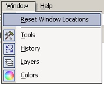

Reset Window Locations
|
 The Reset Window Locations (Window-->Reset Window Locations) allows the user to reset the locations of each of the active windows (four in this case) to their default locations on the workspace. While in their default locations, the four windows will move along with the Paint.NET application whenever the application is resized, moved, etc. |
|
|
|
| During the time one spends working on an image, the various windows may change locations many times. In some rare instances, the user might actually end up 'loosing' a window or two. Notice in this example, the four windows have migrated from their initial default locations. | After executing the Reset Window Locations option, the four windows return to their default locations at each of the four corners of the workspace. |